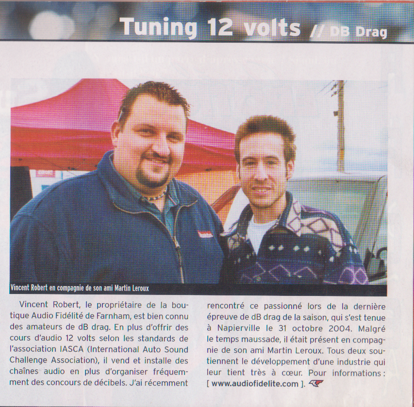

Des expériences adaptées
Voyages sonores, rencontres privées, petits groupes, activités corporatives et projets thématiques autour de la détente, du stress, de l'anxiété, du sommeil, de la concentration et de la mémoire.
CymatiqueLab est né d'une passion qui remonte à l'enfance, puis d'un parcours dans la musique, l'animation, les systèmes audio, la compétition automobile et, plus récemment, l'univers physique et intérieur des gongs et des bols tibétains.
“Il y a des sons qu'on entend. Et il y a des sons qui nous retrouvent.”

Le son automobile m'a appris la précision : régler une installation, comprendre les basses, les fréquences, les limites du matériel et la réaction d'un espace. Les concours et les formations m'ont aussi appris à observer, expliquer et créer des expériences pour un public très varié.
Cette expérience nourrit aujourd'hui CymatiqueLab : une approche où le ressenti demeure central, mais où l'on cherche aussi à documenter ce qui se passe, à comparer les instruments et à rendre le son plus compréhensible.
Pour faire vivre le son, mais aussi pour apprendre de chaque expérience.
Voyages sonores, rencontres privées, petits groupes, activités corporatives et projets thématiques autour de la détente, du stress, de l'anxiété, du sommeil, de la concentration et de la mémoire.
Au fil du développement, CymatiqueLab documentera les sons, les fréquences, les ressentis et les observations possibles afin de mieux comprendre — et mieux expliquer — l'influence du son et des vibrations sur l'expérience humaine.
“CymatiqueLab est un lieu pour ressentir, observer, apprendre et partager.”
Une démarche vivante qui évoluera avec les expériences, les rencontres et les recherches.